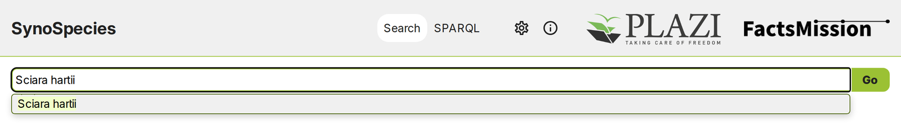
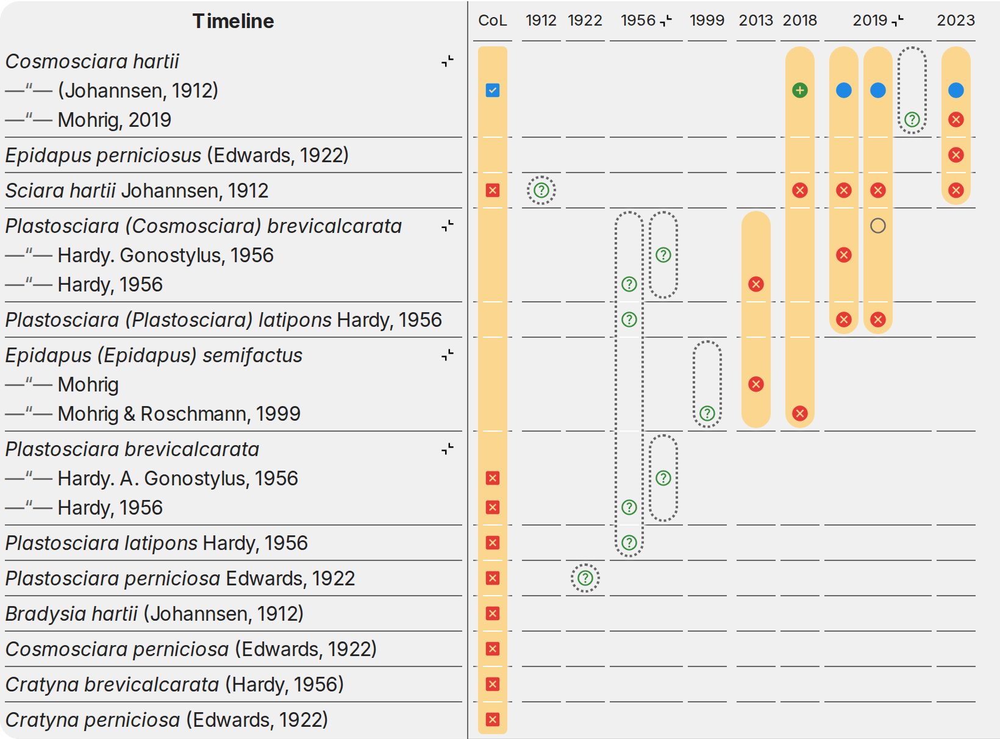
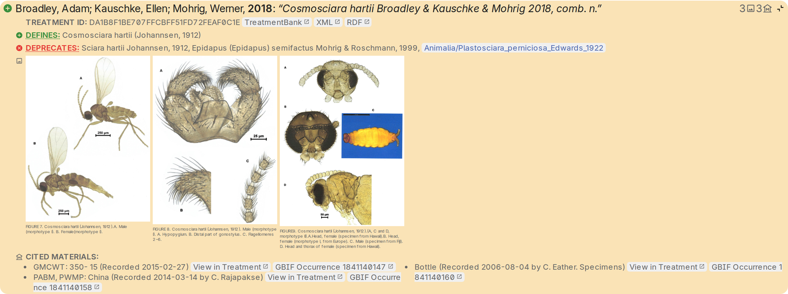
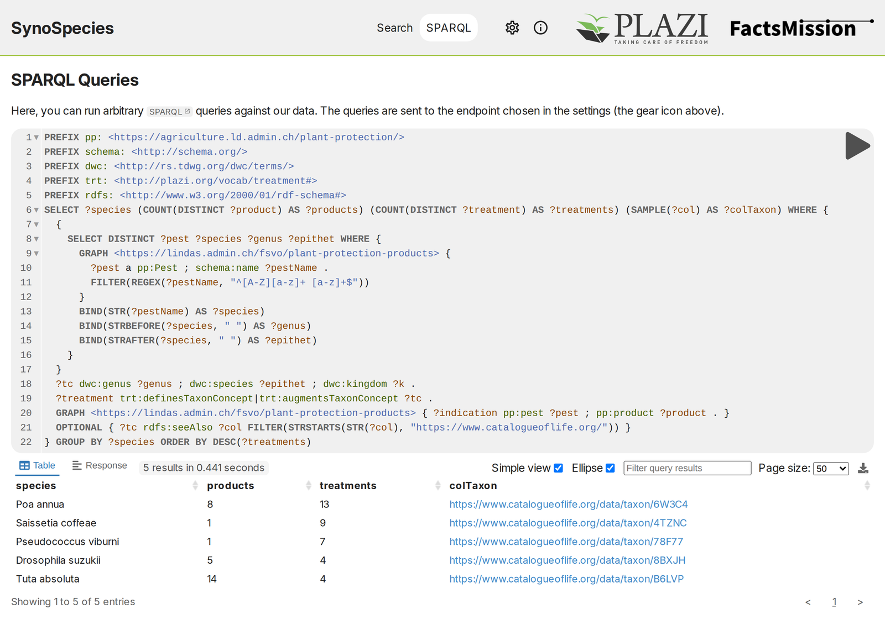

Synospecies: the whole story behind a species name
Which names has a species carried, who changed them, and on what evidence? Synospecies answers this from the taxonomic literature itself. Its new version, now online, brings together every treatment Plazi has liberated from publications, the Catalogue of Life and the specimen data behind them, and shows the history of a name at a glance.
Take a small black fungus gnat that is a pest in greenhouses and mushroom farms worldwide. Typing its original name, Sciara hartii, is all it takes.

Synospecies finds 13 names and five treatments published between 2013 and 2023. Johannsen described the species in 1912 as Sciara hartii; today it is Cosmosciara hartii. On the way it was known as Plastosciara perniciosa and Cosmosciara perniciosa, among others, and in 2019 two species Hardy had described from Hawaiʻi in 1956, Plastosciara latipons and P. brevicalcarata, turned out to be the same animal. Names coined in 1912, 1922, 1956 and 1999 all refer to one cosmopolitan pest — knowledge that matters for biosecurity, and that is easy to miss when it is scattered across a century of literature.
Every one of these synonymies comes with its evidence: the treatment that established it. Synospecies does not simply assert that two names are the same; it shows who said so, when and where.

From the name, Synospecies leads on to the original description, to the type specimens and to the data behind them. Opening a treatment shows its figures, deposited in the Biodiversity Literature Repository, and the material it cites, each specimen linked to its GBIF occurrence. The 2019 revision cites the holotypes of the Hawaiian names, kept in the Bishop Museum in Honolulu; the 2018 study of Australian pest species cites a specimen whose DNA barcode, a short standardised gene sequence, is deposited in GenBank (MG647953); the material citation now links to that sequence as well.

The Catalogue of Life completes the picture. Synospecies shows which names CoL accepts and adds the synonyms CoL knows of, even where no treatment has been liberated yet.
The data stays current. A new or corrected treatment in TreatmentBank is converted to RDF shortly after and reaches the LINDAS and Plazi endpoints almost at once; the QLever endpoint picks it up with its nightly rebuild. New Catalogue of Life releases, published monthly, are detected automatically and added as they appear. Errors spotted by users are fed back to Plazi and are usually corrected within a day.
All of this rests on open linked data. The treatments, the Catalogue of Life and the links between them are published as RDF on public SPARQL endpoints, among them LINDAS, the linked-data service of the Swiss Federal Administration. For questions beyond the name search, Synospecies offers a SPARQL mode: any query can be run directly against the endpoint chosen in its settings.
On LINDAS, Plazi’s treatments sit next to datasets from many federal offices, not only from the environment sector, and can be queried together. The example below joins them with the plant protection products register of the Federal Food Safety and Veterinary Office. For pests such as the spotted-wing drosophila Drosophila suzukii or the tomato leafminer Tuta absoluta, it returns the number of products authorised against them in Switzerland, the number of Plazi treatments describing them, and their entry in the Catalogue of Life — in under a second.

Try it with your favourite species at synospecies.plazi.org.